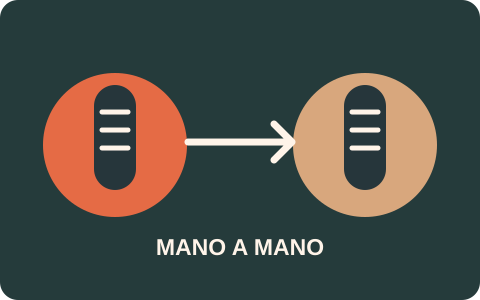
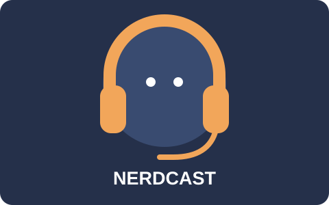
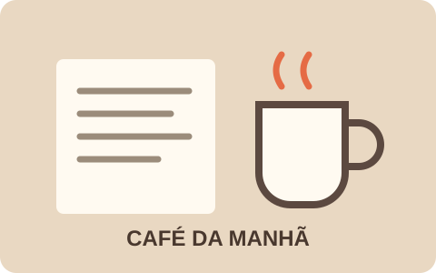

Mano a Mano

O Mano a Mano é um podcast de entrevistas que recebe pessoas de diferentes áreas para conversar sobre suas histórias e opiniões.
Os podcasts são programas em áudio que podem ser ouvidos pela internet. Existem podcasts sobre vários assuntos, como notícias, humor, esportes, filmes e música.
Nesta página estão alguns exemplos de podcasts conhecidos no Brasil.

O Mano a Mano é um podcast de entrevistas que recebe pessoas de diferentes áreas para conversar sobre suas histórias e opiniões.

O NerdCast faz parte do site Jovem Nerd e fala sobre assuntos como filmes, séries, tecnologia, história e outros temas.

O Café da Manhã é um podcast jornalístico que apresenta notícias e explica assuntos importantes do Brasil e do mundo.
| Podcast | Categoria | Assunto |
|---|---|---|
| Mano a Mano | Entrevistas | Cultura e sociedade |
| NerdCast | Entretenimento | Filmes, tecnologia e história |
| Café da Manhã | Jornalismo | Notícias |
Este site foi feito para apresentar alguns podcasts brasileiros e mostrar um pouco da variedade de assuntos que existem nesse formato.
Última atualização: .
Preencha o formulário para indicar um podcast.
Formulário apenas demonstrativo, sem envio de informações.